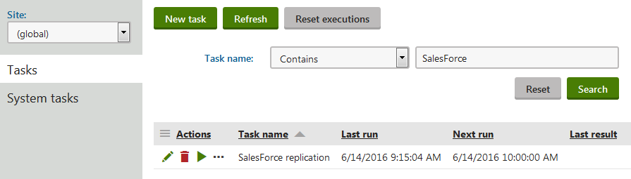

Replicating contacts to Salesforce
Feature retired in Kentico 11
Salesforce integration in Kentico 11 uses Salesforce SOAP API version 23.0, which is deprecated and will be retired in 2023. For more information, see the Salesforce Platform API Versions 21.0 through 30.0 Retirement article.
If you wish to use Salesforce integration, you need to upgrade to Kentico Xperience 13.
The system replicates contacts to Salesforce leads using the SalesForce replication scheduled task. This task runs for all sites in Kentico, by default once per hour.
Prerequisite: Before the system can run the replication task, you need to configure the websites for access to your Salesforce organization and the related replication settings. See: Configuring Salesforce integration
Scheduling the replication process
You can configure the SalesForce replication task according to your own requirements, for example to change when and how often the replication takes place.
Open the Scheduled tasks application.
Select (global) in the Site selector.
Click Edit (
 ) next to the SalesForce replication task.
) next to the SalesForce replication task.
Editing the SalesForce replication scheduled taskSet the properties of the task as required.
Use the Task interval section to schedule the time and frequency of the Salesforce replication process.
We recommend keeping the Run task in separate thread option enabled to maintain optimal replication performance.
Click Save.
The system performs contact replication based on the settings of the task.
Tip: You can Execute ( ) the SalesForce replication task manually at any time from the list of scheduled task.
) the SalesForce replication task manually at any time from the list of scheduled task.
Kentico EMS required
Features described on this page require the Kentico EMS license.
Checking the replication status of your contacts
You can view which contacts in Kentico have or have not been replicated to Salesforce leads.
Open the Contact management application.
Click Advanced search.
Select one of the options on the second Search row in the filter:
Replicated into Salesforce leads
Not replicated into Salesforce leads
Click Search.
The list now only shows contacts that match the selected replication status.
Replication process specifics
When executed, the SalesForce replication scheduled task attempts to replicate all contacts that meet the set scoring requirements.
The application can only make a limited number of API calls to Salesforce within a 24 hour window, so the replication process handles contacts in batches. Each batch is processed using one API call. You can specify the maximum number of contacts that the system replicates in a single batch through the Batch size setting in Settings -> Integration -> Salesforce.com.
To view how many API requests your company has made and how close you are to the limit, refer to Setup -> System Overview -> API Usage in the Salesforce interface.
Replication error handling
Errors can occur during the replication of contacts. For example if a numeric value is too large for the target Salesforce field, or if a contact in Kentico doesn't have a field that is required by Salesforce filled in. In these cases, the process skips the related contact and continues with the replication.
You can find records of all replication errors in the Event log application.
The system flags all contacts that caused an error and blocks them from subsequent replication attempts. The replication block is automatically removed for individual contacts when one of their fields is updated, or globally if the Mapping of contacts to Salesforce leads settings change (see the Configuration section for details).